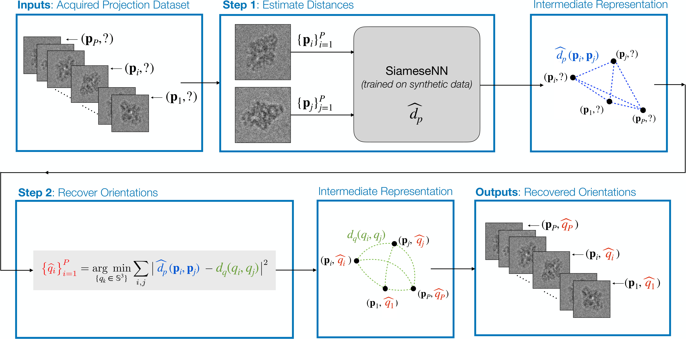

Learning to recover orientations from projections in single-particle cryo-EM¶
Jelena Banjac, Data Science master student, Laurène Donati, BIG, Michaël Defferrard, LTS2, EPFL.
Paper:
arXiv:2104.06237Website with interactive visualizations: https://jelenabanjac.com/protein-reconstruction/home.html
A major challenge in single-particle cryo-electron microscopy (cryo-EM) is that the orientations adopted by the 3D particles prior to imaging are unknown; yet, this knowledge is essential for high-resolution reconstruction. We present a method to recover these orientations directly from the acquired set of 2D projections. Our approach consists of two steps: (i) the estimation of distances between pairs of projections, and (ii) the recovery of the orientation of each projection from these distances. In step (i), pairwise distances are estimated by a Siamese neural network trained on synthetic cryo-EM projections from resolved bio-structures. In step (ii), orientations are recovered by minimizing the difference between the distances estimated from the projections and the distances induced by the recovered orientations. We evaluated the method on synthetic cryo-EM datasets. Current results demonstrate that orientations can be accurately recovered from projections that are shifted and corrupted with a high level of noise. The accuracy of the recovery depends on the accuracy of the distance estimator. While not yet deployed in a real experimental setup, the proposed method offers a novel learning-based take on orientation recovery in SPA.

Repository content¶
Notebooks, used to reproduce our findings, are divided in the following phases:
Data preparation: generate 2D projections from a protein
Distance estimation: learn a function to estimate the distance between two projections
Orientation recovery: recover the projections’ orientations from estimated distances
Protein reconstruction: reconstruct the protein from its projections and their recovered orientations
The notebooks in each folder represent different experimental conditions or modeling approach.
Additionally, the cryoem python package contains scripts to generate a huge amount of 2D projections with corresponding orientation.
Installation¶
Install the software dependencies:
# clone the repository
git clone https://github.com/JelenaBanjac/protein-reconstruction.git
cd protein-reconstruction
# create and activate the environment
conda env create -f environment.yml
conda activate protein_reconstruction
Run the jupyter notebooks ($1 is GPU id, $2 is the port where jupyter is served if ran externally):
cd notebooks
export CUDA_VISIBLE_DEVICES=$1
nohup jupyter notebook --ip=0.0.0.0 --port=$2 &
Licence & citation¶
The code in this repository is released under the terms of the MIT license. Please cite our paper if you use it.
@inproceedings{cryoem_orientation_recovery,
title = {Learning to recover orientations from projections in single-particle cryo-EM},
author = {Banjac, Jelena, Donati, Laur\`ene, and Defferrard, Micha\"el},
year = {2021},
archivePrefix={arXiv},
eprint={2104.06237},
url = {https://arxiv.org/abs/2104.06237},
}